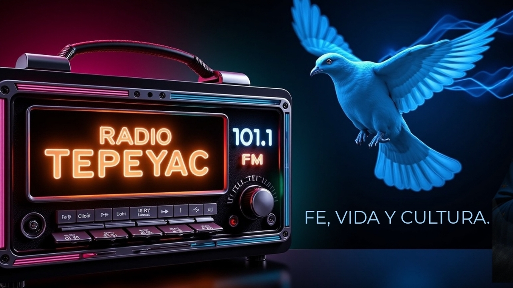

Radio Tepeyac TV
cuerpo {
margen: 0;
familia de fuentes: 'Montserrat', sans-serif;
fondo: url('fondo.jpg') no-repetir centro centro fijo;
tamaño de fondo: portada;
color: blanco;
pantalla: flex;
flexión-dirección: columna;
alinear-elementos: centro;
justificar-contenido: inicio-flexible;
altura mínima: 100vh;
relleno: 1rem;
}
h1 {
tamaño de fuente: 1.8rem;
margen: 0.5rem 0;
alinear texto: centro;
}
.eslogan {
tamaño de fuente: 1.2rem;
color: #4da6ff;
alinear texto: centro;
margen inferior: 2rem;
}
.circle-player {
ancho: 220px;
altura: 220px;
pantalla: flex;
alinear-elementos: centro;
justificar-contenido: centro;
}
.anillo luminoso {
ancho: 100%;
altura: 100%;
radio del borde: 50%;
borde: 5px sólido #4da6ff;
pantalla: flex;
alinear-elementos: centro;
justificar-contenido: centro;
animación: resplandor 2s infinita facilidad de entrada y salida;
relleno: 10px;
tamaño de caja: caja de borde;
}
.anillo luminoso img {
ancho: 100%;
altura: 100%;
objeto-ajuste: cubierta;
radio del borde: 50%;
}
@keyframes resplandor {
0%, 100% { sombra de caja: 0 0 15px #4da6ff; }
50% { sombra de caja: 0 0 30px #4da6ff; }
}
.reproduciendo ahora {
tamaño de fuente: 1rem;
alinear texto: centro;
margen: 1rem 0;
}
.controles {
pantalla: flex;
alinear-elementos: centro;
brecha: 1,5rem;
flex-wrap: envolver;
justificar-contenido: centro;
}
.controla i {
tamaño de fuente: 2rem;
cursor: puntero;
}
.volumen {
ancho: 120px;
}
.live-label {
tamaño de fuente: 0.9rem;
color: #ccc;
alinear texto: centro;
}
.iconos sociales {
margen superior: 2rem;
pantalla: flex;
justificar-contenido: centro;
brecha: 1,5rem;
}
.iconos sociales a {
color: blanco;
tamaño de fuente: 2rem;
}
.pie de página {
margen superior: 2rem;
tamaño de fuente: 0.9rem;
alinear texto: centro;
}
audio { pantalla: ninguno; }

1500 vatios de luz para tu alma
Fe, Vida y Cultura
Cargando canción...
const audio = document.getElementById("audio");
const ahoraReproduciendo = document.getElementById("ahoraReproduciendo");
función togglePlay() {
si (audio.pausado) {
audio.play().catch(e => console.log(e));
} demás {
audio.pausa();
}
}
función stopAudio() {
audio.pausa();
audio.currentTime = 0;
}
función setVolume(val) {
audio.volumen = val;
}
función updateNowPlaying() {
const ahora = nueva Fecha();
const time = now.toLocaleTimeString([], { hora: '2 dígitos', minuto: '2 dígitos' });
nowPlaying.textContent = `🎵 Radio Tepeyac | 🕒 ${time}`;
}
setInterval(actualizarAhoraReproduciendo, 10000);
actualizarAhoraReproduciendo();
if ('serviceWorker' en el navegador) {
navigator.serviceWorker.register('service-worker.js');
}